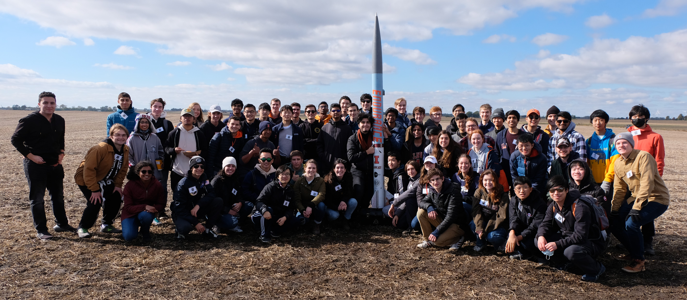
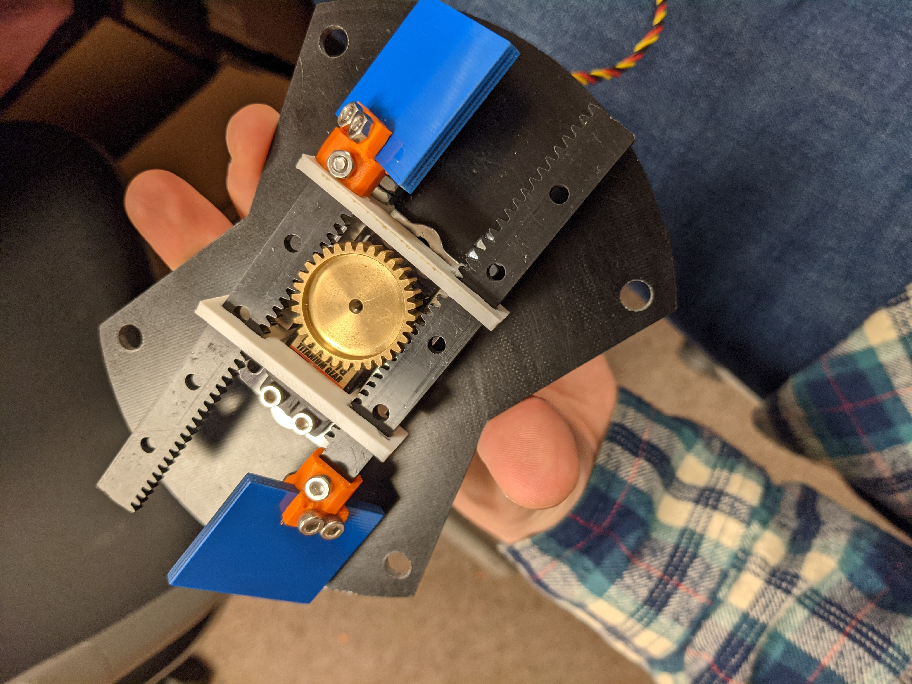
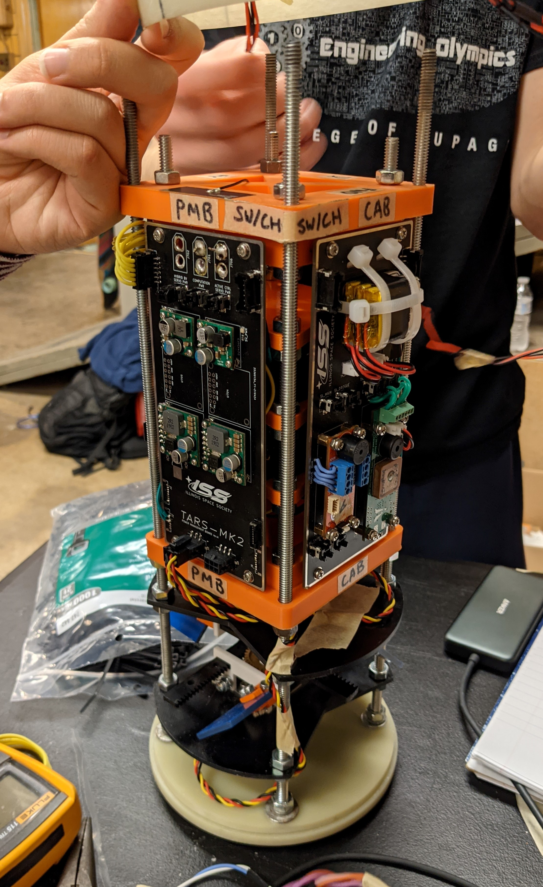
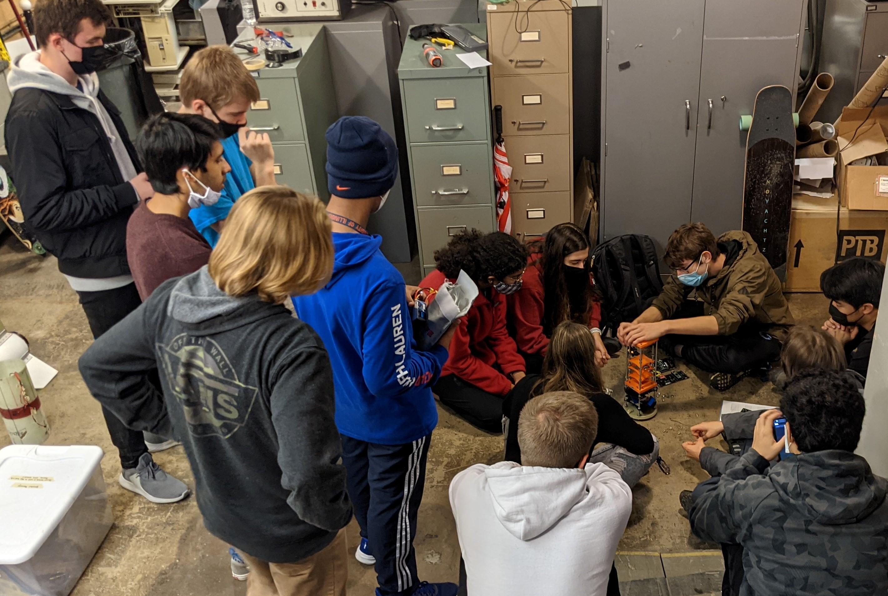

Spaceshot

Over this past semester, I’ve had the pleasure of working on Illinois Space Society’s Spaceshot team. I have
helped exclusively with the avionics team, specifically the software, active control, and avionics structures subteams. We recently had our first
of many to come) test launches, and I wanted to take some time to reflect on the skills and lessons I’ve learned thus far. This test launch rocket
is dubbed "Endurance."
Click here for a video of Endurance's launch
Project Details



Takeaways
- Basics of integrated systems
- How PID controllers can be applied to real life situations
- Introduction to LQR feedback controllers
- More non-class object oriented programming experience
- Importance of clear and consistent communication within a team